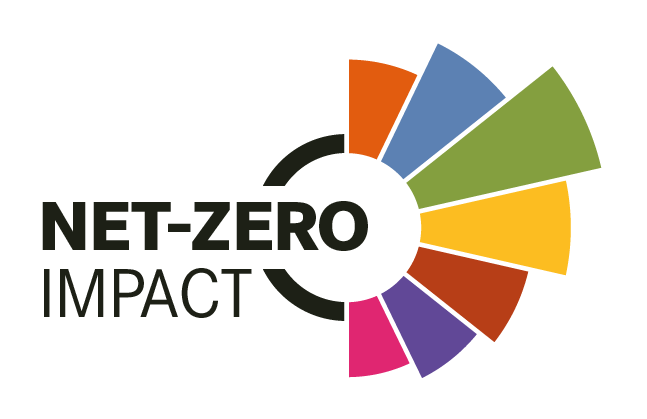

Independent advisory for executives and boards navigating data transformation, analytics maturity, and AI adoption. Principled thinking, practical results.
What I do
I work closely with leadership teams to define strategy, assess capability, and guide execution — across the full data and AI value chain.
Defining a coherent roadmap for data governance, architecture, and analytics capability — aligned with your business objectives.
Identifying high-value AI use cases, evaluating build-vs-buy options, and helping organisations adopt AI responsibly and at scale.
Independent assessment of data platforms, tooling choices, and vendor landscapes — providing an objective second opinion.
Serving as a trusted advisor or independent board member, bridging the gap between technical teams and leadership on data and AI matters.
Guiding organisations through the cultural and operational shift toward data-driven decision-making — from assessment to adoption.
Technical and strategic due diligence on data and AI assets for investors, acquirers, and boards evaluating digital capabilities.
Trusted by

Whether you need ongoing advisory support or a focused engagement, I would be happy to explore how I can help.
Get in touch